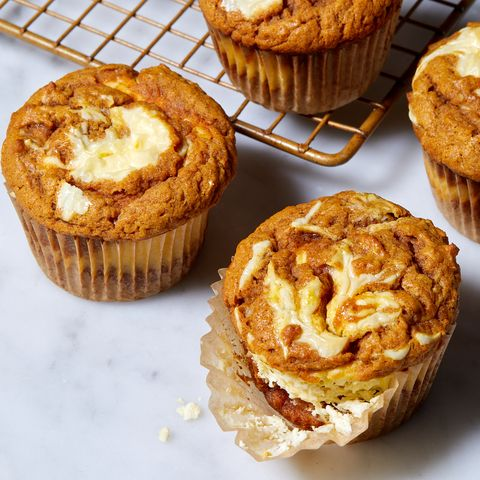

Pumpkin Cream Cheese Muffins
Classic pumpkin muffins are the perfect fall treat to ring in the changing leaves and cozy weather, with plenty of festive pumpkin flavor and warming spices. But, the swirl of cheesecake batter added to these decadent muffins offers a tangy balance to the sweet pumpkin cake. These are so easy to prepare, we'll be enjoying them every morning this fall — and you should too!
Ingredients
PUMPKIN BATTER
- 3/4 c. (1 1/2 sticks; 170 g.) butter, softened, plus more for pan (optional)
- 1 1/3 c. (160 g.) all-purpose flour
- 2 tsp. ground cinnamon
- 1 1/4 tsp. baking soda
- 1/2 tsp. kosher salt
- 3/4 c. (150 g.) granulated sugar
- 1 c. (225 g.) canned pumpkin puree
- 1 large egg
- 1 large egg white
CREAM CHEESE FILLING & ASSEMBLY
- 8 oz. (225 g.) cream cheese, softened
- 1 large egg yolk
- 1 tsp. pure vanilla extract
- Pinch of kosher salt
Steps
PUMPKIN BATTER
- Arrange a rack in center of oven; preheat to 350°. Line a standard 12-cup muffin tin with paper liners or grease with butter.
- In a medium bowl, whisk flour, cinnamon, baking soda, and salt.
- In a large bowl, using an electric mixer on medium speed, beat butter and granulated sugar until light and fluffy, about 2 minutes. Add pumpkin, egg, and egg white; mix on medium speed until combined. Add dry ingredients and mix on low speed until just incorporated. Set aside until ready to use.
CREAM CHEESE FILLING & ASSEMBLY
- In a small bowl, whisk cream cheese, egg yolk, vanilla, and salt until smooth.
- Divide half of batter among prepared muffin tins, then top with cream cheese filling. Scoop remaining batter over top. Swirl with the tip of a knife to create a marble effect.
- Bake until a tester inserted into the center of a muffin comes out clean, 22 to 25 minutes. Let cool completely before serving.